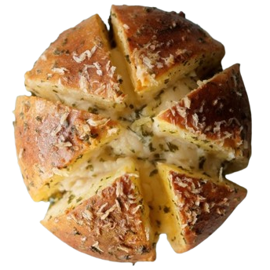

Kkul Ppang

What is Kkul Ppang?
Korean cream cheese garlic bread is a popular Korean street food and bakery item that combines sweet and savory flavors.
Ingredients
6 medium-sized, plain brioche buns, uncut
350g (12.35 ounces) cream cheese
3.5 Tbsp white sugar
70g (2.5 ounces) butter, divided
2 Tbsp minced garlic
1.5 Tbsp milk
1 Tbsp mayonnaise
3 Tbsp white sugar
1 Tbsp dried parsley
1 large egg, beaten
Recipe
Step 1:
Prepare the Cream Cheese Filling
In a medium-sized bowl, combine the cream cheese with 3.5 tablespoons of sugar, stirring until the sugar is fully dissolved. Once ready, transfer the mixture to a piping bag. Set aside.

Step 2:
Sauté the Garlic
Warm up a pan over medium-low heat. Then, melt 20g (about 0.7 ounce) of butter in the pan and add the minced garlic. Gently sauté the mixture, making sure the garlic softens and releases its aroma without browning too much. Remove from the heat.
Step 3:
Melt the Butter
Place the remaining 50g (about 1.8 ounces) of butter in a small bowl and put it in the microwave. Heat until fully melted, which should take about 30 seconds. Or, melt it on the stove instead if you prefer. Check to ensure it has completely liquefied before proceeding to the next step.

Step 4:
Prepare the Garlic Butter Custard
Preheat your oven to 180°C (356°F). Then, in a clean bowl, mix all of the garlic butter custard ingredients together: the sautéed garlic (from step 2), melted butter (from step 3), milk, mayonnaise, sugar, parsley, and egg. Stir everything well to combine, then set aside.
Step 5:
Slice the Bread Buns
Slice the bread buns into six even sections, being careful not to cut all the way through. The bread should remain connected at the base, ensuring it stays as one piece. This setup is perfect for adding the cream cheese filling into the slots you’ve just prepared.
Step 6:
Fill the Bread Buns with Cream Cheese
Place the bread on a board. Carefully pipe the cream cheese filling (prepared in step 1) into each of the sections. Repeat this process for all the bread buns.
Step 7:
Dip the Bread Buns in Garlic Butter Sauce
Dip the cream cheese-filled bread buns in the garlic butter sauce mixture (prepared in step 4). Then, carefully place the bread onto a baking tray that’s been lined with baking paper, ready for baking.
Step 8:
Add Additional Cream Cheese Filling
Apply a layer of the cream cheese filling to the center of each bread bun. (This step is performed separately from step 6 to enhance the presentation by highlighting the cream cheese in the middle, aiming for a visually appealing appearance.)
Step 9:
Bake the Bread Buns
Bake in the oven at 180°C (356°F) for 10 minutes. Once done, remove the tray from the oven and allow it to cool down for 5 to 10 minutes.
Step 10:
Serve
Serve warm or at room temperature for the best taste experience.
Variations
- Herb and Cheese Variation
Add 1 tablespoon of finely chopped fresh herbs (such as thyme, rosemary, or chives) to the cream cheese filling for a fragrant, savory twist.
- Spicy Kick Variation
Incorporate 1 teaspoon of chili flakes or a finely chopped fresh chili into the garlic butter custard for a bit of heat.
- Sweet and Savory Variation
Mix 1 tablespoon of honey into the cream cheese filling and sprinkle a pinch of sea salt on top before baking for a delightful balance of sweet and savory flavors.
- Cheesy Garlic Variation
Add 1/4 cup of grated Parmesan or mozzarella cheese to the garlic butter custard for an extra cheesy and garlicky experience.